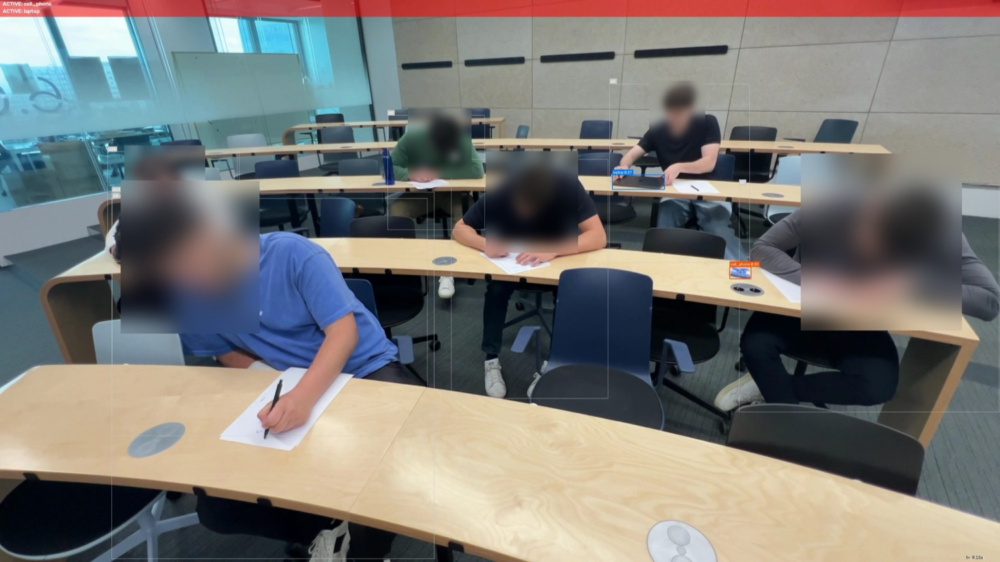
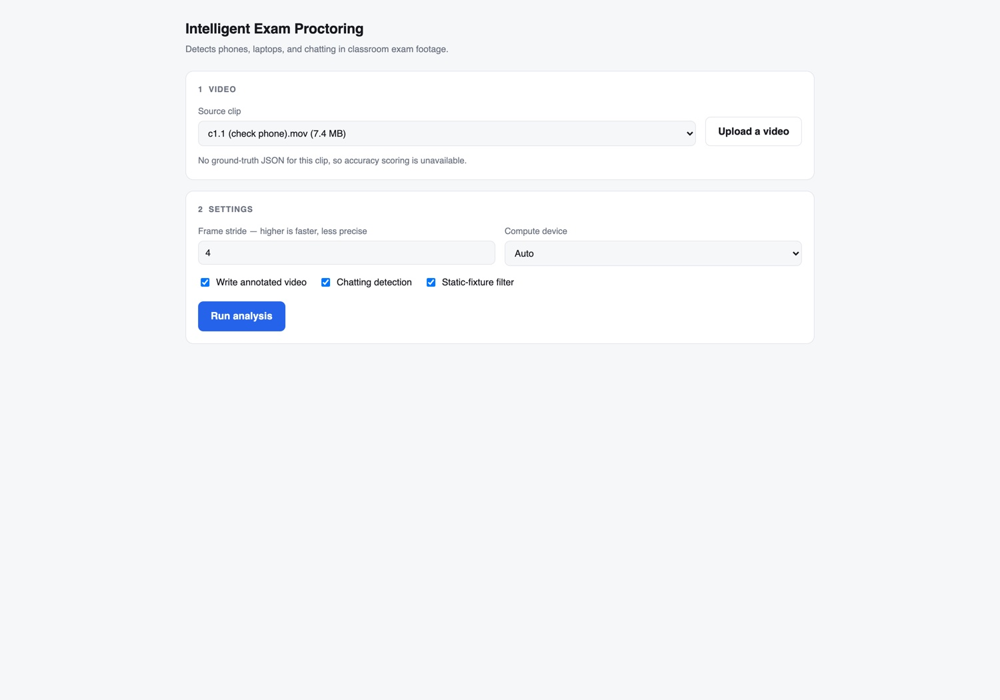
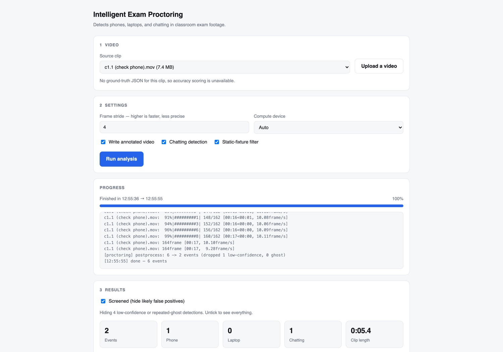
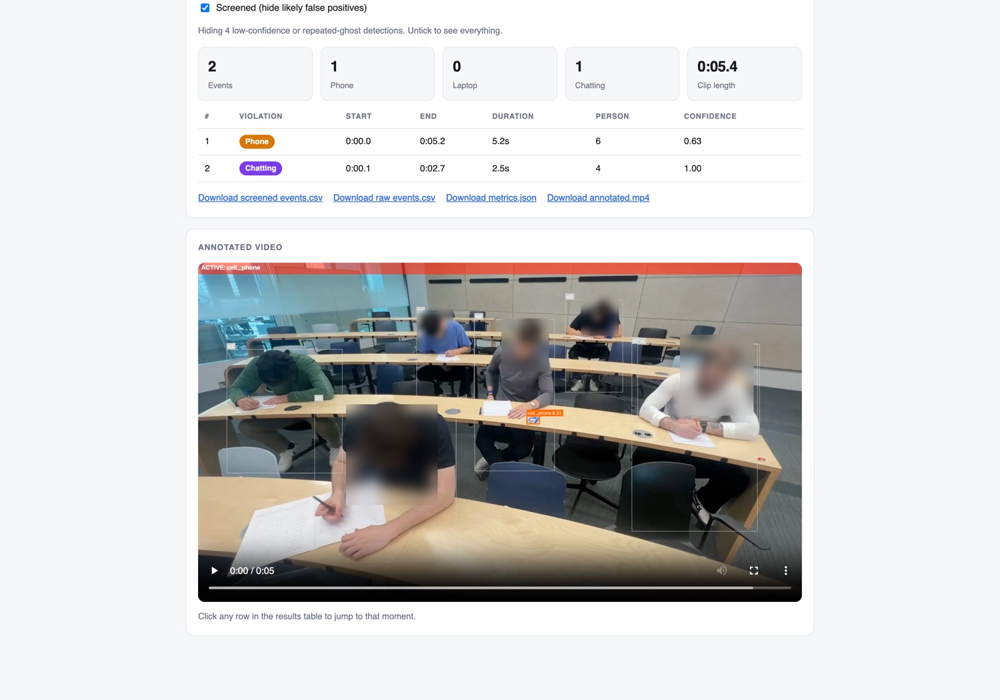

Computer vision — 2026
Intelligent Exam Proctoring
A pipeline that reads classroom exam footage and looks for three things: a phone, a laptop, and two people talking to each other. It produces a timestamped event log, an annotated video, and a web interface a non-engineer can actually operate.
- Context
- Computer Vision group project
- Detection
- YOLO11l with tiled inference
- Tracking
- YOLO11m-pose with ByteTrack
- Interface
- Flask app over the same pipeline
Faces in every frame below are blurred. The footage was filmed with classmates for the assignment, and none of them signed up to appear on a public portfolio.
What it watches for
A classroom camera sees a wide, shallow scene: rows of desks, people mostly looking down, and the objects that matter measuring a few dozen pixels across. Three violation subtypes are tracked, and each needs a different kind of evidence.
- Phones and laptops are object detection, but small and often partly occluded by a hand or a desk edge.
- Chatting is not an object at all. There is nothing to detect, only a geometric relationship between two people that has to hold over time.

How the pipeline is built
The frame loop runs at a stride rather than on every frame, and splits into two branches that rejoin at the aggregator.
video file
│
▼ frame loop (stride N)
├──────────────────────────┬───────────────────────────┐
▼ ▼ │
YOLO11l + tiled inference YOLO11m-pose + ByteTrack │
(cell_phone, laptop) (persistent person ids) │
│ │ │
▼ ▼ │
SpatialFixtureFilter chatting heuristic │
│ (proximity + mutual facing) │
▼ │ │
wrist-aware │ │
device → person association │ │
└──────────────┬───────────┘ │
▼ │
EventAggregator ◄─────────────────────────────┘
(per-subtype min duration + gap tolerance)
│
▼
events.csv + annotated.mp4 + metrics.jsonTiled inference, because the objects are tiny
A phone in the back row is a handful of pixels in a 1080p frame, and a detector run on the whole frame at once will miss it. Each frame is split into a 2 × 2 grid with 20% overlap and run tile by tile, then merged with per-class non-maximum suppression. The overlap exists so an object straddling a tile boundary is not cut in half by the split.
The filter that mattered most
The first working version produced sustained, confident alarms on desks with nobody near them. The detector had locked onto desk grommets and power outlets — small dark ovals that read convincingly as a phone to a model trained on everyday photographs.
The fix is a SpatialFixtureFilter. It clusters detections by pixel location
and, when a cluster keeps firing in the same spot beyond a lifetime threshold, marks that
location as furniture and suppresses it. A real phone moves. A grommet does not. That single
piece of reasoning removed an entire category of false alarm without touching the model.
Tying a device to a person
Detecting a phone is only half of an alert. Somebody has to be holding it. Association is wrist-aware: pose keypoints give wrist positions, and the device is matched to the tracked person whose wrist is nearest. Crucially this is a confidence boost rather than a hard requirement, with a body-centre fallback, so a phone sitting openly on a desk is still reported when the nearest hand drops out of frame for a moment.
Chatting as geometry
Two conditions have to hold at once. The pair must be close, measured in shoulder widths rather than pixels so the threshold survives perspective across the room. And both heads must be turned toward each other, measured by how far the nose has slid along the shoulder axis. Requiring the geometry to persist across several sampled frames is what separates a conversation from someone glancing sideways.

From detections to events
A raw detection stream is unusable as an alert log. It flickers, it gaps, and it would
produce hundreds of one-frame rows. The EventAggregator merges the stream into
intervals using a minimum duration and a gap tolerance tuned per subtype, so a phone that
disappears behind a hand for a moment stays one event instead of becoming three.
Everything that governs this lives in a single YAML config: model paths, the tile grid, confidence and IoU thresholds, fixture-filter radius and lifetime, wrist distances, the chatting geometry, and the per-subtype aggregation timing. Tuning never means editing code.
An interface for whoever actually runs it
A command-line pipeline is fine for the person who wrote it and useless to everyone else. The Flask front-end wraps the same code so a run can be configured, watched and read without a terminal.



One detail I enjoyed: the launcher deliberately avoids port 5000. On macOS, Control Center holds it for AirPlay Receiver, so a browser reaching it instead of Flask shows a blank page and a confusing hour. If the chosen port is busy the launcher steps up to the next free one and prints where it landed.
How it is evaluated
Ground truth is stored as JSON intervals alongside each clip. A predicted event counts as a match when its temporal IoU against a ground-truth interval clears a threshold, and results are reported at three thresholds rather than one, so it is visible how much a score depends on where the bar is set. Precision, recall and F1 are broken out per subtype as well as overall, because the three violation types fail in different ways and an aggregate number would hide that.